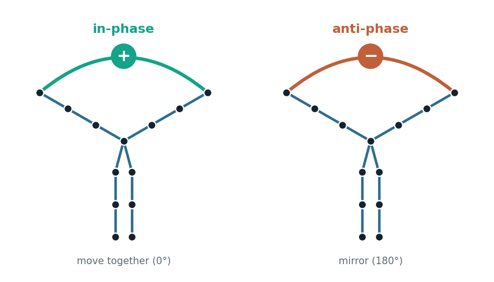
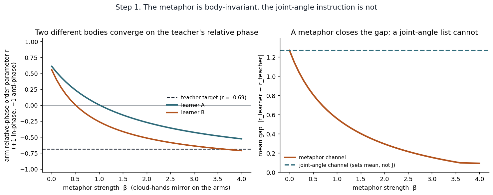
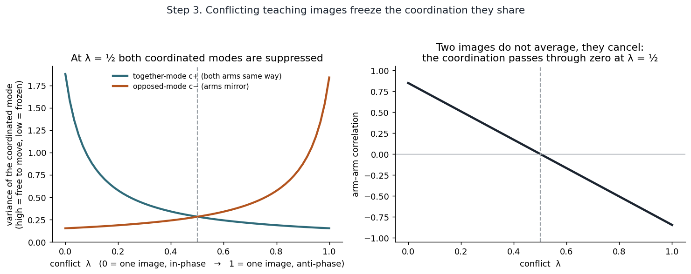
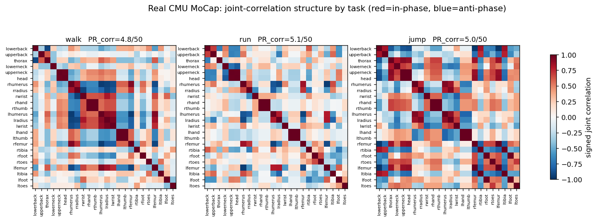
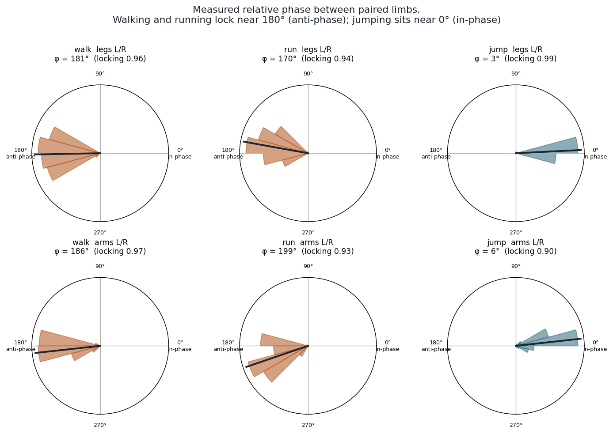
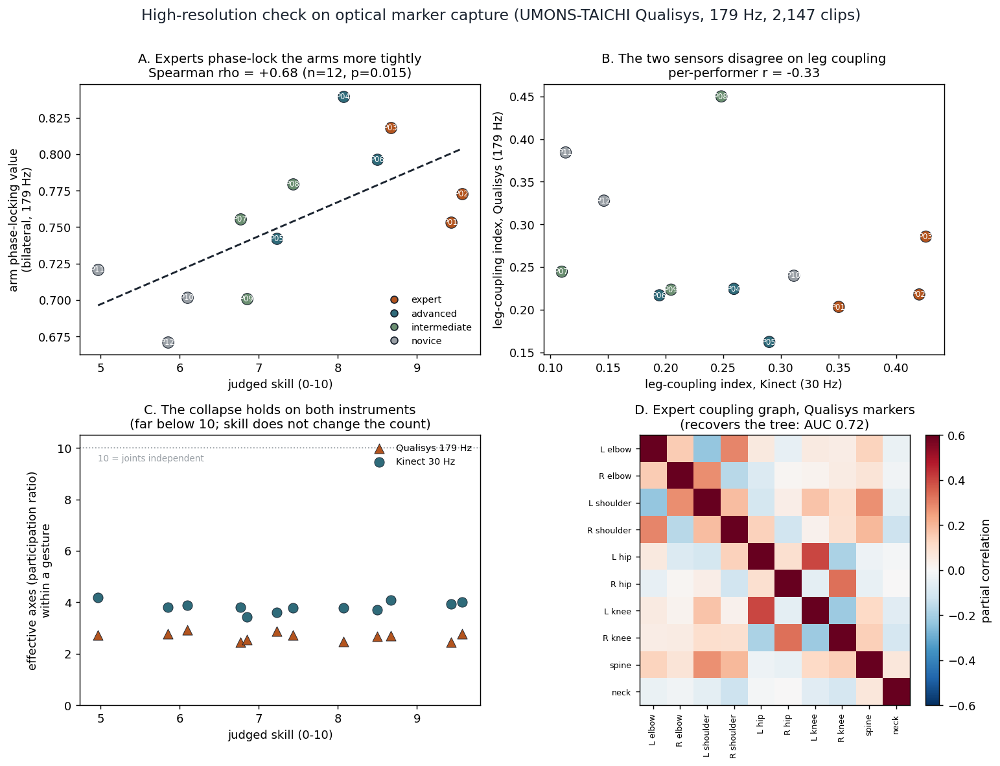

The formalism
A body is a set of coupled joints. All the coordination lives in one matrix.
A pose is a vector of joint angles x ∈ ℝⁿ. The body’s coordination is an energy, and comfortable postures are more likely:
One object: a signed graph Laplacian
J splits three ways, and all three are the same kind of object — a signed graph Laplacian:
For a signed, weighted edge set W, the Laplacian is L = D̄ − W with the absolute-degree diagonal D̄ii = Σj|Wij|. That absolute value is what keeps J positive-definite even when an edge is negative.
- γI — a baseline stiffness; each joint resists moving on its own.
- Lanatomy — the kinematic tree: the bones, as positive edges.
- β·Lmetaphor — the teaching image: signed edges linking limbs, β the dial.
Signs: from binding to relation
A single teaching image is one coupling, E = ½w(a·xi − b·xj)², and its perfect-square expansion is the Laplacian read with a sign: the wa²/wb² diagonal is D̄ and the −wab off-diagonal is −W. Summing the squares over anatomy + metaphor rebuilds the one signed Laplacian — signs are not a second mechanism bolted on.
POSITIVE EDGE
in-phase
ordinary block D̄ − W · joints move together (0°)NEGATIVE EDGE
anti-phase
signless block D̄ + |W| · joints mirror (180°)Off-diagonal J < 0 is in-phase; J > 0 is anti-phase. Fixed ratio (1, r) is the same perfect square at unequal coefficients. One builder — no spin model imported.
The inverse: recover and decompose how it’s coded
Given real motion-capture, the model runs backward — it reads the couplings out of the movement, then splits them by graph support.
- Recover. Take the empirical covariance Σ̂ of the joint angles across frames and invert it: Ĵ = Σ̂⁻¹. The couplings come from the data, nothing assumed.
- Decompose. On each bone edge, the anatomical weight is the recovered partial coupling, w_anat = −Ĵ[i,j]; build L_anat from those, then M = Ĵ − L_anat. M vanishes on the tree and carries the metaphor off-tree.
- Read. The sign of each off-tree entry is the relation: M[i,j] < 0 in-phase, > 0 anti-phase — limb to limb.
The model
What the analogy actually does — and what it does not.
The claim
With one constraint, an analogy sets which coordination the body takes — not how compressed the motion is, but which pattern it falls into.
NOT
how compressed the motion is
dimensionality — it stays fixedBUT
which coordination it takes
the pattern — it flips with the taskTwo differently built bodies fall into the same coordination, each reaching it through its own joints. That settled pattern is the order parameter (Haken, Kelso & Bunz, 1985).
The teaching image is a signed edge

Frustration
Give the body two images that fight — one “together,” one “mirror” — at strengths W(1−λ) and Wλ. At λ = ½ they cancel, the shared coupling Jij → 0, and coordination freezes rather than averaging. So the order and compatibility of teaching images should matter for learning.
Figures
Synthetic demonstrations and fits to real motion capture.





Key terms
In plain language.
- Degrees of freedom
- the independent ways the body can move.
- Synergy
- many joints yoked to move as one.
- Covariance
- how much two joints move together.
- Precision matrix (J)
- the inverse of covariance; which joints are directly coupled.
- Graph Laplacian
- turns a network of couplings into an energy that scores how much connected joints disagree.
- Signed edge
- a coupling that is “+” (move together) or “−” (mirror).
- In-phase / anti-phase
- moving together (0°) versus opposing (180°).
- Order parameter
- one number for the whole coordination pattern.
- Participation ratio (PR)
- the effective number of independent directions the motion uses, (Σλ)²/Σλ².
- Partial correlation
- two joints’ coupling with all others held fixed.
- Relative phase / phase-locking
- where two limbs are in their cycle; how steadily they hold it.
- Frustration
- two conflicting images cancel, freezing the motion.
- AUC
- a 0.5–1 score: 0.5 = chance, 1 = perfect recovery.
- Positive-definite
- a stability condition: the energy has one clear bottom.